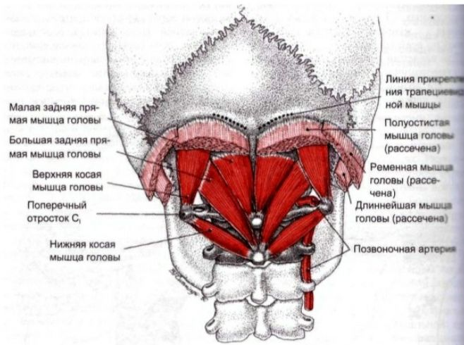

1.Правило номер один
Ненапрягать затылок. Ищите положение при котором
основание черепа и шея сзади НЕ напрягаются!
Роль подзатылочных мышц исключительно важна, они связаны с глазодвигательными мышцами, с апоневрозом головы и с мышцами спины в целом, поэтому их перенапряжение и спазм приводит к многочисленным проблемам от смещения костей черепа, что вызывает ухудшение зрения, темные круги и отеки под глазами и усугубление межбровных морщин, и до серьезных постуральных проблем.
2.Правило номер два
- если видите, что лицо от того или иного приема
сразу выглядит хуже - не верьте никаким обещаниям, что это временно и пройдёт - просто прекращаете это делать
сразу. На чудо не
надейтесь, лицо у нас одно и оно нам дорого. Значит, этот прием именно вам не подходит!
Поскольку на напряжение затылка жалуются очень многие, уделим внимания этой зоне, как очень важной области черепа, напряжение в которой негативно сказывается на многих структурах.
Напряжение в затылке негативно влияет на венозный отток от черепа (здесь выходят основные вены), сказывается на положении нижней челюсти, состоянии глаз (отеки, темные круги, благодаря связи прдзатылочных мышц с глазодвигательными), вызывает спазм лобной мышцы и межбровки.Также имеется связь затылка и подъязычных мышц, поэтому расслабляя затылок мы тем самым помогаем языку занять более комфортное положение на небе. Все техники делаются мягко, без силового воздействия, до ощущения расслабления.